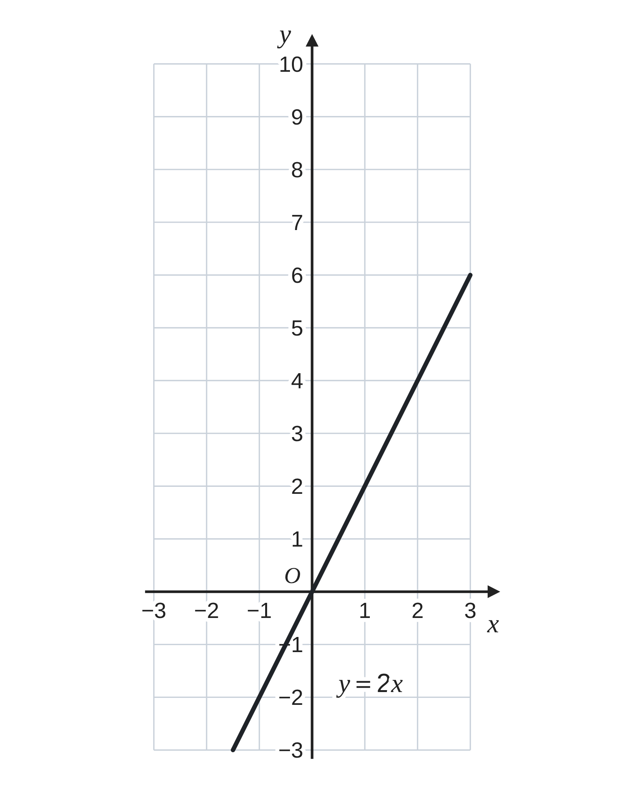
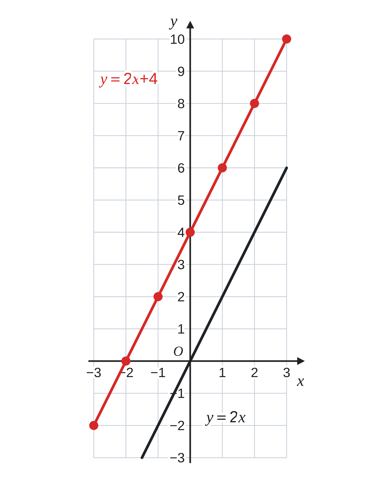
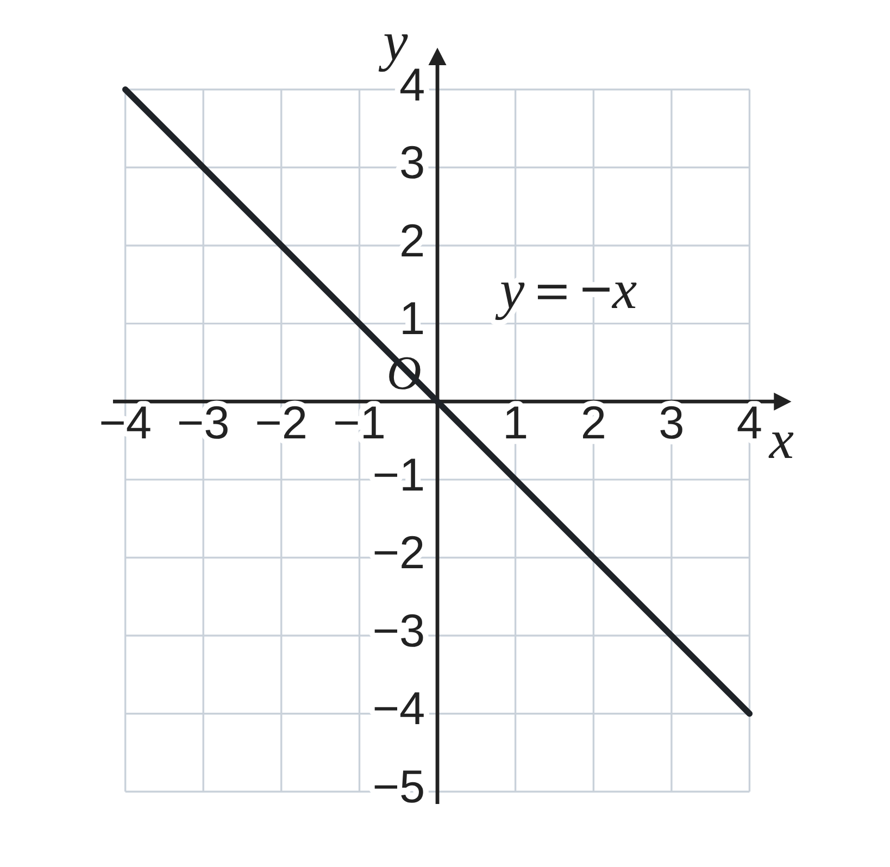
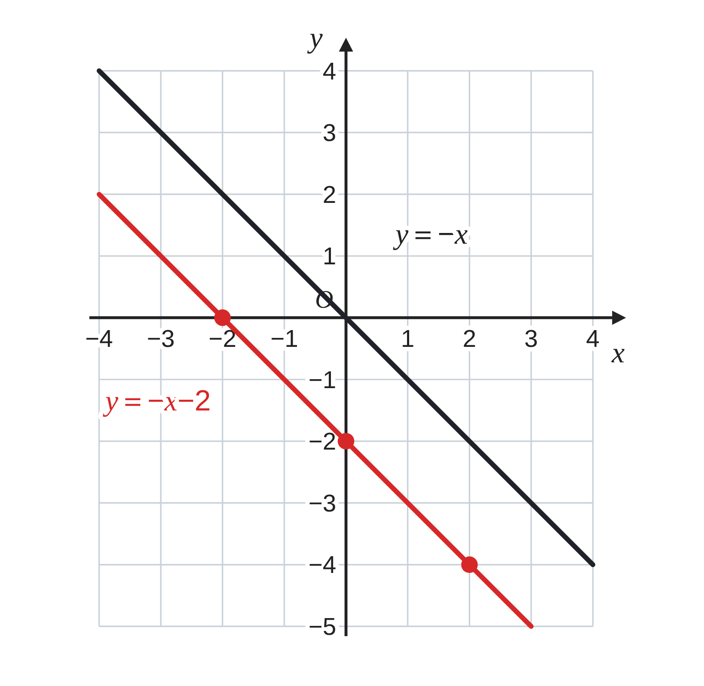

ペア学習
第4時 一次関数のグラフは、比例のグラフとどうちがうだろう
第3時までの重要語句から、1人1問ずつ、言葉を選んで出題する。
聞かれた人は、その言葉の意味を、自分の言葉で言う。
一次関数
変化の割合
増加量
一次関数 第4時 一次関数のグラフは、比例のグラフとどうちがうだろう
めあて
第4時 一次関数のグラフは、比例のグラフとどうちがうだろう
学習課題
比例 y＝2x と、一次関数 y＝2x+4 について、表を完成させて、y＝2x+4 のグラフを右の座標平面にかこう。
（y＝2x のグラフは、かいてある。）
2つのグラフをくらべて、気づいたことを書こう。
| x | −3 | −2 | −1 | 0 | 1 | 2 | 3 |
|---|---|---|---|---|---|---|---|
| y＝2x | −6 | −4 | −2 | 0 | 2 | 4 | 6 |
| y＝2x+4 |

一次関数 第4時 一次関数のグラフは、比例のグラフとどうちがうだろう
学習課題のまとめ
第4時 一次関数のグラフは、比例のグラフとどうちがうだろう
| x | −3 | −2 | −1 | 0 | 1 | 2 | 3 |
|---|---|---|---|---|---|---|---|
| y＝2x | −6 | −4 | −2 | 0 | 2 | 4 | 6 |
| y＝2x+4 | −2 | 0 | 2 | 4 | 6 | 8 | 10 |
気づいたこと
どれも、y＝2x の値より 4 大きい。
点は直線にならぶ。y＝2x のグラフと平行。
y＝2x のグラフを、上へ 4 だけ動かした形。
y 軸と (0, 4) で交わる。

一次関数 第4時 一次関数のグラフは、比例のグラフとどうちがうだろう
ことば
第4時 一次関数のグラフは、比例のグラフとどうちがうだろう
y＝ax+b のグラフは、比例 y＝ax のグラフを、
y 軸の正の方向に だけ した直線である。
（b が負の数のときは、下へ動かす。）
グラフが y 軸と交わる点は (0, b)。
この b を、グラフの という。
例 y＝2x+4 の切片は 、y＝2x の切片は 。
一次関数 第4時 一次関数のグラフは、比例のグラフとどうちがうだろう
ことば
第4時 一次関数のグラフは、比例のグラフとどうちがうだろう
y＝ax+b のグラフは、比例 y＝ax のグラフを、
y 軸の正の方向に b だけ平行移動した直線である。
（b が負の数のときは、下へ動かす。）
グラフが y 軸と交わる点は (0, b)。
この b を、グラフの切片という。
例 y＝2x+4 の切片は 4、y＝2x の切片は 0。
一次関数 第4時 一次関数のグラフは、比例のグラフとどうちがうだろう
例題
第4時 一次関数のグラフは、比例のグラフとどうちがうだろう
一次関数 y＝−x− のグラフを、
y＝−x のグラフ（かいてある）を使って、
右の座標平面にかこう。
また、切片を答えよう。

一次関数 第4時 一次関数のグラフは、比例のグラフとどうちがうだろう
例題 解答
第4時 一次関数のグラフは、比例のグラフとどうちがうだろう
切片が −2 だから、
y＝−x のグラフを、
下へ 2 だけ平行移動した直線。
点 (0, −2) を通る。
y＝−x のグラフと平行。
切片 −2

一次関数 第4時 一次関数のグラフは、比例のグラフとどうちがうだろう
考えよう
第4時 一次関数のグラフは、比例のグラフとどうちがうだろう
座標平面には、かききれない。図をかかずに、確かめる方法を考えよう。
①
点 A(10, 24) が、y＝2x+4 のグラフの上にあるか、確かめよう。
（式・表・ことば・図など、自分の考えで）
②
点 B(−4, −6) は、y＝2x+4 のグラフの上にあるだろうか。
①の方法で確かめよう。
③
気づいたこと。点がグラフの上にあるかどうかは、
どのように見分けられるだろう。
発展 演習まで解き終わった人は、考えてみよう！ y＝2x のグラフを上へ 4 動かすかわりに、左右（x 軸の方向）に動かして、y＝2x+4 のグラフにぴったり重ねることはできるだろうか。
一次関数 第4時 一次関数のグラフは、比例のグラフとどうちがうだろう
振り返り
第4時 一次関数のグラフは、比例のグラフとどうちがうだろう
今日のめあて
平行移動
切片
一次関数のグラフ
今日わかったことを、ペアで1つずつ言い合おう。
ワークシートと演習プリントを出そう。（未完成でも出す）
一次関数 第4時 一次関数のグラフは、比例のグラフとどうちがうだろう